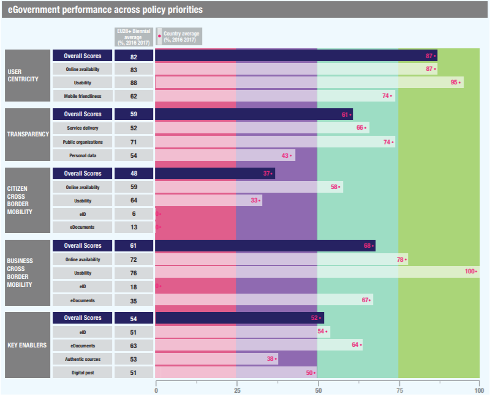

ISA2
Table of Contents

Digital Government Factsheet 2019
Germany
ISA2
Country Profile 3
Digital Government Highlights 6
Digital Government Political Communications 7
Digital Government Legislation 11
Digital Government Governance 17
Digital Government Infrastructure 24
Digital Government Services for Citizens 30
Digital Government Services for Businesses 35
Country Profile
Basic data
Population: 82 792 351 inhabitants (2018)
GDP at market prices: 40 900 million Euros (2018)
GDP per inhabitant in PPS (Purchasing Power Standard EU 28=100): 124 (2017)
GDP growth rate: 1.4% (2018)
Inflation rate: 1.9% (2018)
Unemployment rate: 3.4% (2018)
General government gross debt (Percentage of GDP): 63.9% (2017)
General government deficit/surplus (Percentage of GDP): 1% (2017)
Area: 357 134 km2
Capital city: Berlin
Official EU language: German
Currency: Euro
Source: Eurostat (last update: 15 March 2019)
Digital Government Indicators
The following graphs present data for the latest Digital Government Indicators for Germany compared to the EU average. Statistical indicators in this section reflect those of Eurostat at the time the factsheet is being prepared.
Digital Government State of Play
The graph below is the result of the latest eGovernment Benchmark report, which monitors the development of eGovernment in Europe, based on specific indicators. These indicators are clustered within four main top-level benchmarks:
- User Centricity – indicates to what extent (information about) a service is provided online and how this is perceived.
- Transparency – indicates to what extent government are transparent regarding: i) their own responsibilities and performance, ii) the process of service delivery and iii) personal data involved.
- Cross-Border Mobility – indicates to what extent EU citizens and businesses can use online services in another country.
- Key Enablers – indicates the extent to which five technical pre-conditions are available online. There are: Identification (eID), electronic documents (eDocuments), Authoritative Sources, and Digital Post. Digital Post refers to the possibility that governments communicate electronically-only with citizens or entrepreneurs through e.g. personal mailboxes or other digital mail solutions.
These top-level benchmarks are measured using a life-events (e.g. mystery shopping) approach. Eight life events are included in the overall eGovernment performance score. Four of these life events were measured in 2013, 2015 and 2017 and the other four were measured in 2012, 2014, 2016, and again in 2018. The life events measured in 2017 were Regular business operations, Moving, Owning and driving a car and Starting a small claims procedure. The life events measured in 2018 are Business start-up, Losing and finding a job, Family life and Studying.
Source: eGovernment Benchmark Report 2018 Country Factsheet
Digital Government Highlights
Digital Government Political Communications
The implementation strategy Digitalisierung gestalten – Umsetzungsstrategie der Bundesregierung was adopted in November 2018 and aims to ‘shape’ the future of digital transformation that Germany will undertake in the coming years. The main goal of the strategy is to further increase the quality of life for all German citizens in order to be able to develop additional economic and ecological potential and secure social cohesion.
Digital Government Legislation
The eIDAS Implementation Act entered into force on 29 July 2017 in Germany. The core of the eIDAS Implementation Act is the Trust Service Act (VDG). It regulates the nationally required clarifications for the effective implementation of the eIDAS Regulation. On 28 February 2019 the Trust Services Ordinance (VDV) came into force, providing the final specifications of the requirements for trust services and trust service providers, such as accessibility and financial security.
Digital Government Governance
In March 2018 Ms. Dorothee Bär was appointed to the newly established post of State Minister for Digitisation at the Federal Chancellery.
Digital Government Infrastructure
The eInvoicing Service for the Federal Government (eRechnung) was launched on 27 November 2018.
Digital Government Services for Citizens and Businesses
As part of the current digitisation programme, digital government services are developed in digitisation laboratories. These laboratories represent a multi-stakeholder approach where different experts and users are brought together to achieve user-oriented solutions.
Digital Government Political Communications
Specific political communications on digital government
Shaping digitisation – Implementation Strategy of the Federal Government
The implementation strategy Shaping Digitalisation (Digitalisierung gestalten – Umsetzungsstrategie der Bundesregierung) was adopted in November 2018 and aims to ‘shape’ the future of digital transformation that Germany will undertake in the coming years. Focus is placed on what digitalisation can bring to the individuals and on the necessity to preserve the liberal and democratic values present in the German Constitution. The main goal of the strategy is to further increase the quality of life for all German citizens in order to be able to develop additional economic and ecological potential and secure social cohesion.
Interim Report by the Federal Government on the Implementation for the First National Action Plan (NAP) for 2017 – 19
The Interim Report by the Federal Government on the Implementation for the First National Action Plan (NAP) for 2017 – 19 in the Framework of Germany’s Participation in the Open Government Partnership (OGP), published in November 2018, constituted a self-assessment of Germany’s progress so far.
National eGovernment Strategy
The National eGovernment Strategy (NEGS), adopted by the IT Planning Council on 24 September 2010, is regularly evaluated and updated. The NEGS is currently being evaluated. In addition to observing the principles listed in the 2017 Tallinn Declaration on eGovernment, the NEGS will also be checked against new trends which are increasingly influencing the digital transformation of society, business and industry, at the national, European and international level. Depending on the information gathered by the evaluation, the NEGS will be updated or a newer and more broadly-based digital strategy for public administration in Germany will be developed. The description of the current NEGS given below applies until further notice. The goal of the current Strategy is to guide the country's eGovernment progress in the coming years. The Strategy has been developed in cooperation with a broad spectrum of stakeholders from the fields of administration, politics, science and business.
The National eGovernment Strategy aims at ensuring a common orientation for eGovernment activities and efforts at federal, state and local levels in order to establish an attractive eGovernment and information technology approach for citizens and businesses. Thereby, according to the new Strategy's vision, eGovernment should be characterised by five principles:
- Orientation on usefulness for citizens, businesses and public administration: Potential users of eGovernment offerings/services like citizens and businesses should be fully aware of the services offered to them and be able to access them. In particular, broadband access in rural areas should be improved as well as citizens' digital/media literacy.
- Cost-effectiveness and efficiency: For enabling the public administration to provide rapid, cost-efficient and high-quality services, it should design process chains within the public administration, which should be supported by electronic means, following a customer-centric approach. The various processes will be digitised to the most possible extent, with the Federal Government and the States putting the appropriate legal, organisational and technical instruments in place for ensuring the mandatory use of digital technologies.
- Data protection, cyber security and transparency: Data protection, security and transparency constitute important preconditions for the citizens to accept, trust and intensively use eGovernment. Therefore, the National eGovernment Strategy aims at ensuring data transparency and security by paying particular attention to only collect and process the data that is absolutely necessary for providing a particular administrative service. The protection of the providing systems is vital for the acceptance of eGovernment services as well.
- Social participation and transparency: Active participation of citizens and businesses in policy as well as in planning and decision-making processes is fostered, as far as it is reasonable and allowed by law. Impact and results of participation should be made transparent to citizens and businesses. Innovation and sustainability: Federal, State and local Public Administrations will support the capacity for innovation and openness to change through their own high-performance and client-oriented eGovernment offerings.
The National eGovernment Strategy also contains six key principles that new legislations and initiatives should take into account:
- Citizens and businesses can complete as many of their errands as possible from the same point of access, regardless of time and location.
- Authorities should be able to cooperate quickly across different levels to minimize the administrative burden for citizens, businesses and public administration, e.g. by providing spatial data via the Spatial Data Infrastructure Germany initiative (GDI-DE).
- Citizens and businesses should know which public authorities process their personal data. They should be confident that eGovernment is secure.
- Citizens use electronic media to participate actively in the policy process and in organising the provision of public services.
- Public administration should use cooperation models with the business and research community when developing and operating eGovernment solutions. It will enable innovative business models, in particular through online services and information.
- Information security management leads to a high level of IT security for eGovernment procedures and guarantees confidentiality, integrity and availability of data.
Memorandum for the National eGovernment Strategy
At its 5th Meeting of 30 June 2011, the IT Planning Council took the first concrete steps towards the implementation of the National eGovernment Strategy, by publishing a memorandum, which outlines the agreed strategic goals. The main focus was placed on building a federal infrastructure and aligning individual measurements. According to the memorandum, IT planning envisages the following priorities to be addressed:
- Transparent government and regulatory actions should be promoted by appropriate measures of information technology and eGovernment.
- Federal and state governments need to adapt to the IT processes and current threats from the Internet. Therefore, minimum uniform standards for communication between government departments should be developed.
- Develop a common eID strategy to enable citizens and businesses to securely transact with the administration over the Internet. In this regard, the notification procedure to the European Commission for the German eID was fully finalised in 2017. As reported by the Federal Office for Information Security (BSI), “the German eID fulfils all requirement of eIDAS Level of Assurance high”.
- A federal information management system will bring together faster and more efficiently knowledge management to improve public services.
- Sharing initiatives to federal, state and local governments for cost saving in IT infrastructures are in the making.
- The definition of IT security and IT interoperability standards is one of the main tasks of the IT Planning Board.
- The framework for levels across eGovernment should be further developed. The IT planning supports the coordinated activities of the federal and state laws to further adjust the regulatory framework.
The IT Consolidation Programme of the German Federal Government
The German Cabinet decided in summer 2015 to substantially modernise the IT of the German Federal Government. One pillar of this modernisation programme was to consolidate the IT of the Federal Government in a small number of data centres. The programme contained:
- Consolidation of the already existing data centres of the Ministry of the Interior, the Ministry of Finance and the Ministry of Transport and Digital Infrastructure including their subordinate agencies.
- The consolidation of the remaining IT of the federal government.
- Establishing an IT controlling authority.
- Consolidation of IT procurement.
- Development of innovative IT services for the federal government including trusted federal cloud services.
Key enablers
Access to public information
No political communication was adopted in this field to date.
eID and Trust Services
No political communication was adopted in this field to date.
Security aspects related to digital government
Cyber Security Strategy for Germany
On 9 November 2016, the Cyber Security Strategy for Germany was adopted by the Federal Government. This built upon the lessons learnt and continued the initiatives outlined in the 2011 Cyber Security Strategy. The new strategy formed a cross-departmental strategic framework for the activities of the federal government with regard to cyber security.
The overall aim of the new strategy was to ensure cybersecurity on a level appropriate to the importance and protection of networked information infrastructures without affecting the opportunities and benefits offered by the cyberspace.
Interconnection of base registries
No political communication was adopted in this field to date.
eProcurement
No political communication was adopted in this field to date.
Domain-specific political communications
eGesetzgebung: A project aiming at a fully digital legislation process
eGesetzgebung: Ein Projekt des Bundesministerium des Innern, für Bau und Heimat, adopted in April 2018, aimed to create a fully digital legislative process. It will be achieved by making the legislative process at the federal level completely electronic, and free of media discontinuity and interoperable. At the same time, the process should orientate itself on current technological developments, thus legislative work modern and future-proof, and by providing for instance user-friendly applications. Examples of these are the Demonstrator (prototype), ePlanning and Text-matching (restricted access).
High-Tech Strategy 2020 for Germany: Ideas, Innovation, Prosperity
The Federal Ministry of Education and Research has developed a High-Tech Strategy that aims to stimulate Germany’s scientific and economic potential in a targeted way and to find solutions to global and national challenges. Germany would like to continue its efforts of becoming a worldwide innovation leader through a set of formulated innovative goals, defined priorities, and introduced new instruments within a wide range of different fields of innovation.
The High-Tech Strategy is the first broad national concept in which the key stakeholders involved in innovation share a joint vision. It is based on five pillars:
- Prioritising future challenges related to prosperity and quality of life;
- Consolidating resources;
- Strengthening the dynamism of innovation in industry;
- Creating favourable conditions for innovation;
- Strengthening dialogue and participation.
Interoperability
Architectural guideline for federal IT
With the Architectural guideline for federal IT (Architekturrichtlinie für die IT des Bundes), adopted in July 2018. The Federal Government aimed to provide a comprehensive IT architecture management in order to achieve IT consolidation within Germany. To do so, binding architecture guidelines, which were subjected to ongoing development, were developed for all areas affected by the IT consolidation in the Federal Government.
Emerging technologies
AI Strategy: Strategie Künstliche Intelligenz der Bundesregierung
This Artificial Intelligence (AI) Strategy (Strategie Künstliche Intelligenz der Bundesregierung), adopted in November 2018, was put forward by the Federal Ministry for Education and Research, the Federal Ministry of Economic Affairs and Energy and the Federal Ministry of Labour and Social Affairs. With this AI strategy, the Federal Government established the framework for the holistic development and application of AI in Germany.
Digital Government Legislation
Specific legislation on digital government
The Single Digital Gateway Regulation
On 11 December 2018, the Single Digital Gateway (SDG) Regulation 2018/1724 entered into force. Based on a decision of the IT-Planning Council, a national stakeholder network for the SDG implementation was set up in April 2019 which consisted of SDG multipliers appointed by each of the 16 federal states, the national coordinator appointed by the Federal government, contact persons of the Federal Ministries and representatives of the leading municipal associations. The network will meet at least twice a year. On 21 May 2019, a national kick-off meeting for the SDG implementation took place at the German Federal Ministry of the Interior, Building and Community in Berlin.
The implementation of the SDG regulation was an integral part of the implementation of the German Act for the Improvement of Online Access to Administration Services (Onlinezugangsgesetz - OZG). A major screening process of the SDG regulation is under way to identify the concrete implementation requirements on all administrative levels. The aim of this screening process was set up a detailed requirement catalogue for the project managers of the current digitalisation initiatives (portal network, digitalisation program, service accounts, Federal Information Management - FIM, IT consolidation at federal level, modernisation of registries, among others). In addition, the SDG implementation requirements will feature on a new website that is currently in preparation to facilitate the OZG implementation.
Act for the Improvement of Online Access to Administration Services
On 18 August 2017 the Act for the Improvement of Online Access to Administration Services (Onlinezugangsgesetz, OZG) entered into force. Federal, Länder and local governments were now required to take comprehensive measures in order to promote electronic government services. Core regulations included:
- All (suitable) administrative services must be available online within five years after the law’s entry into force.
- Federal Länder and municipal eGovernment services must be available both through a newly created federal online portal and the online portals of the Länder. All portals are meant be connected to a network of portals, the Portalverbund. Thus, access to electronic government services becomes easier and more user-friendly.
- Access to all administrative services in the portal network must be allowed via a secure single-user account. In the user account, personal data (e.g. date of birth, residence) can be stored permanently for the users’ convenience, provided they have given their consent.
Act to promote electronic government
On 17 June 2013, the Bundestag, with the approval of the Bundesrat, adopted the Act to promote electronic government (eGovernment Act, EGovG). The German law for the promotion of eGovernment came into effect on 1 August 2013. Its aim was to facilitate electronic communication with the administration and to enable federal, state and local authorities to provide simpler, more user-friendly and efficient eGovernment services. The main provisions included:
- Obligation for federal, state and local authorities to open a point of access for the transfer of electronic documents.
- Obligation for federal authorities to open a De-Mail access and to offer an electronic proof of identity via electronic identity (eID) card and electronic residence permit.
- Electronic record keeping.
- Enabling electronic evidence and electronic payment in administrative procedures.
- Obligation to document and analyse processes before implementing information technology systems.
- Provision of machine-readable data (open data).
- Georeferencing of electronic registers.
- The eGovernment Act triggered legislative activities in most of the German federal states. By now seven Länder have already adopted their own eGovernment Act while, several others have initiated legislative procedures.
German Basic Law (Articles 91c and 91d)
On 1 August 2009, within the framework of the second round of reforms of Germany's federal structure, important changes in the German Basic Law (Grundgesetz) came into force with articles 91c and 91d. Article 91c ensured the simplification of IT bodies and decision-making processes, thus increasing their effectiveness and enabling their adaptation to the needs of the fast-evolving technical progress. The German federation now has the exclusive legislative competence for the development of a secure linking-up network to inter-connect Federal and Land IT-networks, which is free of underlying media issues. Furthermore, Article 91d constituted a vital component for the modernisation of the administration as it provides the legal basis for facilitating the federation and the Länder to directly and effectively benchmark their administrations in order to increase their effectiveness, transparency and provision of better public services.
Law on the combination of information technology networks of federal and state governments
The envisaged objectives of the German Basic Law are implemented through the Law on Linking up Federal and Land IT Networks (IT-NetzG), adopted on 10 August 2009, as well as through an Inter-Länder Agreement which came into force on 1 April 2010. According to this agreement, the IT Planning Council was established and tasked with developing the technical requirements for the core network infrastructure to be used. Moreover, the IT Planning Council bears the responsibility to steer cross-disciplined eGovernment, projects involving both federation and the Länder. Finally, the council adopts decisions on IT interoperability and security standards.
Key enablers
Access to public information
Law on re-use of Public Sector Information
The Law on the re-use of Public Sector Information came into force on 19 December 2006, transposing the pertinent EU Directive 2003/98/EC. The law regulated the information re-usage of public sector information beyond the public-administrative scope, namely, for shaping new information-products and related services. The law specifids that re-usage of public sector information had to be non-discriminative, contemporary and not exclusive. In accordance with the revision of the EU Directive, the law was revised in July 2015.
Freedom of information Act
After being narrowly approved by the Lower Chamber of the Bundestag in early June 2005, Germany’s Freedom of information (FOI) Act was voted on 8 July 2005 by the Bundesrat, published in the Federal Gazette on 13 September 2005 and came into force on 1 January 2006. The law provided the public with a general right to access Federal Government information. However, this general right was limited by a number of broadly defined exemptions, covering, for instance, security-sensitive issues, potential threats to public safety and even the 'fiscal interests of the Federal Government'. The legislation also contained an 'Internet clause' to compel federal administration bodies to make a number of items publicly available online. Certain Federal States also have their own Freedom of Information Legislation.
Open Data Act (EGovG, Article 12a)
The principle of open data is becoming increasingly important worldwide and availability of data is thus becoming an important economic factor.
In light of this, on 18 May 2017, the German Bundestag passed the draft of Federal Open Data Act amending the eGovernment Act, presented by the Federal Minister of the Interior, which initiates cultural change in the administrations and obliges federal authorities to publish unprocessed data in the future.
The law sets out common criteria for open data. These include in particular the free of charge provision, the free access to the data, as well as the machine readability. At the same time, data protection, as well as other reasons that prevent publication are observed, thus ensuring that only data suitable for publication is provided.
So that the open data provided by the different administrations can be easily found, the nation-wide metadata portal GovData was created.
eID and Trust Services
Draft legislation introducing a card for EU citizens and Members of the European Economic Area and amendment to other law
The Gesetz zur Einführung einer Karte für Unionsbürger und Angehörige des Europäischen Wirtschaftsraums mit Funktion zum elektronischen Identitätsnachweis sowie zur Änderung des Personalausweisgesetzes und weiterer Vorschriften has been prepared in 2018 and is now close to adoption by the German Parliament. It introduces a card with electronic ID for a larger circle of people. The card is introduced in a non-mandatory manner and is available on request for citizens of the European Union and the European Economic Area. The eID card is not a classical ID but just a simple card with an electronic chip on which the most important identity aspects are saved (especially name, date and place of birth, address). The eID card enables the respective persons to use those German e-government services which demand the highest level of reliability.
eIDAS Implementation Act
Since 1 July 2016, the eIDAS Regulation has been the single legal framework for electronic trust services across the EU. In Germany, the eIDAS Implementation Act entered into force on 29 July 2017. The core of the eIDAS Implementation Act was the Trust Service Act (VDG). It regulated the nationally required clarifications for the effective implementation of the eIDAS Regulation. On 28 February 2019 the Trust Services Ordinance (VDV) came into force, providing the final specifications of the requirements for trust services and trust service providers, such as accessibility and financial security.
Electronic Identification Promotion Act
The Electronic Identification Promotion Act came into force on 15 July 2017. It aimed to promote the use and dissemination of online identification through the German eID card, making it easier and more secure. The identity card with its eID function, i.e. an electronic proof of identity function, was introduced in 2010. This feature enables citizens, government agencies and businesses to reliably identify themselves on the Internet. However, use of the eID function lagged behind the expectations. In order to address this situation, since 15 July 2017 each new identity card is issued with a ready-to-use electronic identification function. With the Electronic Identification Promotion Act, several other additional measures were taken in order to promote the usage of the national eID function. The responsible data protection authorities monitor compliance with data protection.
Digital Signature Act
The German Electronic Signature Act came into force on 22 May 2001, implementing EU Directive 1999/93/EC on a Community framework for electronic signatures and replacing the previous Digital Signature Act that was adopted as part of the Information and Communication Services Act of 1 August 1997. It regulated the necessary secure infrastructure for the use of electronic signatures, which received the same legal status as hand-written signatures. It was complemented by an Ordinance on Electronic Signatures of 16 November 2001 setting out standard requirements and responsibilities for certification authorities, as well as minimum requirements for technical components used to create digital signatures. The Digital Signature Act was amended by Signature Act (1. SigÄndG) of 04/01/2005.
Security aspects related to digital government
Federal Data Protection Act
Germany has one of the strictest data protection laws in the European Union. The world's first data protection law was passed in the German Land of Hessen in 1970. In 1977, a Federal Data Protection Law followed, which was replaced in 1990, and amended in 1994 and 1997. An additional revision took place in August 2002 to align German legislation with the EU Data Protection Directive (95/46/EC).
On 6 April 2016, the EU agreed to a major reform of its data protection framework by adopting the data protection reform package. It comprised the General Data Protection Regulation (Regulation (EU) 2016/679 - GDPR), replacing the Directive 95/46/EC and the Police Directive (Directive (EU) 2016/680). The GDPR applied from 25 May 2018 and became directly applicable. The GDPR was designed to harmonise data privacy laws across Europe, to strengthen the protection of the individual’s right to personal data protection to guarantee the free flow of personal data between EU Member States. However, the GDPR permitted Member States to modify several provisions under certain conditions via local legislation (opening clauses). In order to keep the quality of German data protection standards and in using several opening clauses Germany adopted the Act to Adapt Data Protection Law to Regulation (EU) 2016/679 and to Implement Directive (EU) 2016/680 including a Federal Data Protection Act. The amendments came into force in May 2018.
Interconnection of base registries
Commercial Registry
For the Commercial Registry, the most important legislation is the German Commercial Code. Part II, Article 8, states that the Commercial Registry is under the control of the courts, and the right to inspect the Registry is open to everyone. Copies of entries could be obtained upon application, and they can be authenticated. Another important regulation is the Commercial Registry Regulation. According to article 3, the Commercial Registry consists of two divisions: individual merchants and registered joint stock companies. Information regarding the electronic maintenance of the Commercial Registry, recorded files, registry folders and inspections can also be found in the regulation.
Population Registry
The Population Registry is under the Federal Registration Act (BMG). The Act does not provide a definition regarding the Population Registry, but it regulates areas such as the required reference data to be registered, registration authorities and their duties, storage of data, accuracy and completeness of the Population Registry, information restrictions, storage and deletion of data, registration certificates, use restrictions, automatic retrieval and data transfer.
Land Registry
For the Land Registry, both the Grundbuchordnung (GBO) and the Civil Code (BGB) contain paragraphs which are relevant to the Registry. The Grundbuchordnung places more emphasis on governing the procedural part, the required processes and formalities. Its articles cover information such as the entries to be made in the Registry, rectifications of the data, the exchange of copies of the Land Registries, public charges, access to basic files and more. The Civil Code areas of information are related to items such as a land lease, rental fees, annuities and property management.
eProcurement
Official Contracting Terms for Award of Service Performance Contracts
The Government passed Directive 2004/17/EC, Directive 2004/18/EC and Directive 2005/51/EC into national law when the official contracting terms for award of service performance contract were published on 6 June 2006. The original contracting terms were subsequently simplified through the Contract Awards for Public Supplies and Services- Part A (VOL/A) published on 29 December 2009 in the Federal Gazette (Volume 61, Nr.196a), again with a corresponding correction published on 29 February 2010. The amended procurement ordinance (Vergabeverordnung, VgV), which came into force on 11 June 2010, regulated the submission of electronic bids in the area of public procurement.
On 1 December 2016, the Bundestag adopted the Law on the Transposition of the Directive of eInvoicing in Public Procurement (Directive 2014/55/EU).
eInvoicing
In Germany, the competence in the field of eInvocing is shared between the Federal Ministry of the Interior (at the federal level) and the Land (at the Länder level). The legislation in place makes reference to the eBill Law from 4 April 2017 (E-Rechnungsgesetz), which mandates the receipt and processing of eInvoicing for all federal contracting authorities. As far as other state and local entities were concerned, they shall rely on supplementary legislation by the Länder. Due to a decision by the National IT Planning Council in June 2017 XRechnung is as a Core Invoice Usage Specification (CIUS) to European Norm 16931- the leading Standard for Central authorities, regional authorities & local authorities in Germany. Furthermore, the eInvoicing platform was activated by the federal government for B2G public procurement at the end of 2018.
Domain-specific legislation
Electronic Commerce Act
The Electronic Commerce Act of 14 December 2001 implemented the EU eCommerce Directive (2000/31/EC) into German law. The Act amended the Tele Services Act and the Tele Services Data Protection Act of 1997 (both of them adopted as part of the Information and Communication Services Act of 1 August 1997), as well as some provisions of the German Civil Code.
Act to Regulate De-Mail Services and Amendments to other Legislation
Legal requirement for registration as a De-Mail provider is an Act to regulate De-Mail services and amendments to other legislation. The draft was adopted by the Federal Cabinet on 13 October 2010 and entered into force on 3 May 2011. De-Mail enables the sending of traceable and confidential documents and messages online. Compared to conventional e-mail, the delivery of the De-Mails can be proven. It is not possible to read or manipulate the contents of a De-Mail on its journey across the Internet. De-Mail providers are interoperable and provide the same level of security based on an accreditation process that is specified by the legislator. De-Mail providers have to fulfil high requirements on security, functions, interoperability and data protection. Furthermore, De-Mail legislation foresees that providers must not only furnish the stated certificates for security, functionality and interoperability, but must also demonstrate comprehensive measures to protect personal data within the scope of the accreditation procedure.
The basic specifications for security, functionality and interoperability were drawn up by the federal government together with future De-Mail providers and laid down in technical guidelines. To ensure compliance with these guidelines, De-Mail providers are screened in an accreditation process. With a focus on data protection, the De-Mail concept, for instance, requires that De-Mail providers can enable the setting up of pseudonym e-mail addresses as a means of preventing traceability in communication or consumer profiles. Furthermore, when requested, De-Mail providers must store the user's encryption certificates in the directory service to support (additional) end-to-end encryption of De-Mails.
The German Federal Office for Information Security (BSI) has published the approval criteria on its website.
Interoperability
No legislation was adopted in this field to date.
Emerging technologies
No legislation was adopted in this field to date.
Digital Government Governance
National
Policy
Minister of State for Digititalisation
The role of State Minister for Digitalisation at the Federal Chancellery was established in March 2018.
| Dorothee Bär Minister of State for Digitalisation Contact details: Federal Chancellery Willy-Brandt-Straße 1 10557 Berlin Source: https://www.bundesregierung.de |
Federal Ministry of the Interior, Building and Community
The responsibility for Germany's eGovernment policy lies with the Federal Ministry of the Interior, Building and Community.
| Horst Seehofer Federal Minister of the Interior, Building and Community Contact details: Federal Ministry of the Interior, Building and Community Alt Moabit 140 10557 Berlin Tel.: +49 30 18 681-0 Fax: +49 30 18 681-12926 E-mail: poststelle@bmi.bund.de Source: http://www.bmi.bund.de/ |
Directorate-General for Digital Society
Within the Federal Ministry of the Interior, Building and Community, the Directorate-General for Digital Society drives the digital transformation and modernisation of public administration in order for it to meet current requirements of performance, responsiveness, efficiency and transparency.
| Peter Batt Director General for Digital Society, Digitisation in Public Administration and Information Technology Contact details: Federal Ministry of the Interior, Building and Community Alt Moabit 140 10557 Berlin Tel.: +49 30 18 681-12723 Fax: +49 30 18 681-12983 E-mail: IT-Beauftragter@bmi.bund.de Source: http://www.bmi.bund.de/ |
Federal Government Commissioner for Information Technology
The Office of the Federal Government Commissioner for Information Technology was established on 1 January 2008, in line with the Federal IT-Steering Strategy's guidelines. In accordance with the Cabinet's decision the Commissioner is responsible for the following activities:
- Elaboration of the eGovernment and IT security strategy for the federal IT;
- Development of an architecture, standards and methods for the federal IT;
- Control the provision of central IT infrastructure of the federal government.
Apart from establishing the Office of the Federal Government Commissioner for Information Technology, all government departments have set up a position of a Chief Information Officer (CIO). CIOs of all government departments form the CIO Conference, which is the central body for the decision-making process for IT-related laws and regulations in the federal public administration at the Ministry level.
The Commissioner chairs the CIO Conference and is the federal representative in the IT Planning Council, which is responsible for steering and coordinating cross disciplined eGovernment projects involving both the Federation and the States (Länder).
| Klaus Vitt State Secretary in the Federal Ministry of the Interior Federal Government Commissioner for Information Technology Contact details: Federal Ministry of the Interior, Building and Community Alt Moabit 140 10557 Berlin Tel.: +49 30 18 681-0 Fax: +49 30 18 681-12926 E-mail: StV@bmi.bund.de Source: http://www.bmi.bund.de/ |
IT Council
The IT Council is the central strategic body for overarching digitisation issues. Its members are civil servants responsible for administrative digitisation and information technology policies in all federal ministries.
The main task of the Council is the strategic management of information technology, administrative digitisation and the federal government's IT consolidation.
Coordination
Federal Ministry of the Interior, Building and Community
The Federal Ministry of the Interior, Building and Community coordinates the combined implementation efforts of all federal ministries and agencies. Better coordination of implementation is achieved through the IT Management at federal level.
Federal Government Commissioner for Information Technology
The Office of the Commissioner for Information Technology brings together the units responsible for the coordination of the 'Information Society', the main IT Strategy of German Federal Administration and the Office of the Task Force 'Deutschland Online' as well as the unit responsible for the operative trans-departmental IT-Steering including large scale programmes such as the IT consolidation programme. The Commissioner is the key contact person in the Federal Government for cooperating with Federal States, municipalities and all relevant national and international stakeholders on IT-related matters. The Commissioner represents the Federal Government in the IT Planning Council.
IT Planning Council
The IT Planning Council is an important body which brings together the Federal Government Commissioner for Information Technology (the responsible state secretary at federal level), the state secretaries responsible for information technology (CIOs at state level), the Federal Commissioner for Data Protection and Freedom of Information and representatives of the national associations of local authorities.
The IT Planning Council is responsible for steering and coordinating cross disciplined eGovernment projects involving both the Federation and the States (Länder). According to Article 91c of the German Basic Law, the Council is tasked with the coordination of the cooperation between the Federation (Bund) and the States in the field of Information Technology; decisions on IT interoperability and security standards; the steering of eGovernment projects; and the planning and implementation of the core network infrastructure according to the Law on Linking up Federal and Land IT Networks.
Federal IT cooperation (FITKO)
In carrying out its tasks in accordance with Article 91c of the Basic Law and Section 1 (1) of the State Treaty on IT, the IT Planning Council is assisted strategically and operationally by the FITKO Project Team. The Project Team is also preparing the role of FITKO as an institution under public law, which will be set up in early 2020 and based in Frankfurt. As an institution under public law which is jointly sponsored by the 16 federal states and the Federal Government, FITKO will consolidate the existing organisational structures as well as the personnel and financial resources of the IT Planning Council. FITKO’s tasks will also include developing and implementing a federal digital strategy and a federal IT architecture, promoting joint IT solutions, administering the budget for digital technology and creating a network to connect all relevant stakeholders.
Implementation
German Federal Office of Administration (BVA)
The German Federal Office of Administration (Bundesverwaltungsamt - BVA) is Germany's central public service agency. It performs more than 100 different tasks for all federal ministries. Among these is the development of some of the country’s eGovernment infrastructure components such as the government portal Bund.de, or the Content Management System Government Site Builder.
Individual Government Ministries and Agencies
Government ministries and agencies are responsible for the implementation of their departmental ICT projects. The Federal Ministry of the Interior coordinates the combined implementation efforts of all federal ministries and agencies.
Support
Federal Office for Information Security (BSI)
The Federal Office for Information Security (Bundesamt für Sicherheit in der Informationstechnik - BSI) is the central IT security service provider for the German Government. One of its key tasks is to provide support to federal authorities on IT security.
| Arne Schönbohm President of the Federal Office for Information Security (BSI) Contact details: Federal Office for Information Security P.O. Box 200363 53133 Bonn Tel.: +49 228 99 95 82-0 Fax: +49 228 99 95 82-5400 E-mail: bsi@bsi.bund.de Source: https://www.bsi.bund.de/ |
ITZBund
ITZBund (Informations Technik Zentrum Bund) is the central IT service provider of the federal administration. Its main task is to provide high-performance and high-quality IT solutions, especially for the federal administration. The establishment of the ITZBund in 2016 represented a first step towards the implementation of the general concept of IT federal consolidation.
Digital Council
The Digital Council is an advisory body, which is tasked with facilitating a close exchange between politicians and national and international experts. It is composed of independent experts from the fields of science, research and business coming from Germany and other countries, who are working on an honorary basis. With their expertise, they cover as many areas of digitisation as possible.
The Council shall provide technical support and, where necessary, advise the Federal Government on how to shape digital change within society, industry and administration.
Base registry coordination
Federal Ministry of Transport and Digital Infrastructure and Federal Motor Transport Authority (KBA)
The Central Vehicle Registry collects, records and processes vehicle and owner data from local registration authorities.
Ministry of Justice of the federal state of North Rhine-Westphalia on behalf of the other German federal states (Regions)
The German Commercial Register (Handelsregister) portal is run by the Ministry of Justice of the federal state of North Rhine-Westphalia on behalf of the other German federal states (Länder). It provides centralised access to all federal state registers of companies, cooperatives and partnerships and to announcements for the register.
Ministry of Justice
Land Registries are set up for districts and are therefore managed locally.
Municipalities and Länder Interior Ministries
The Population Registry (Melderegister) in Germany is administered locally. They have centralised registries only in some states. There is a central registry for foreigners.
Audit
Federal Court of Accounts
The President of the Federal Court of Accounts also serves as Federal Commissioner for Efficiency in Public Administration. S/he puts forward proposals, recommendations, reports and opinions in order to enhance the efficiency of the federal administration. The Commissioner may also advise Parliament upon request.
Data Protection
Federal Commissioner for Data Protection and Freedom of Information
The Federal Commissioner for Data Protection and Freedom of Information is responsible for the audits/controls of all federal agencies, with regard to the observance of data protection legislation.
| Ulrich Kelber The Federal Commissioner for Data Protection and Freedom of Information Contact details: The Federal Commissioner for Data Protection and Freedom of Information Husarenstraße 30 53117 Bonn Tel.: +49 228 99 77 99-0 Fax: +49 228 99 77 99-550 E-mail: poststelle@bfdi.bund.de Source: https://www.bfdi.bund.de/ |
Data Ethics Commission
The use of algorithms and artificial intelligence, as well as the handling of data, holds great potential. At the same time, numerous ethical and legal questions arise when dealing with new technologies. The Federal Government's Data Ethics Commission should provide answers to these questions and, on the basis of scientific and technical expertise, develop ethical guidelines for the protection of the individual, the preservation of social coexistence and the safeguarding and promotion of prosperity in the digital age.
Under the leadership of the Federal Ministry of the Interior, Building and Communities and the Federal Ministry of Justice and Consumer Protection, the Commission is tasked with providing the Federal Government with recommendations for action, as well as proposing regulatory options. A final report on the work carried out by the Commission is expected for October 2019.
Subnational (federal, regional and local)
Policy
German Federal States
All of the Federal States (Länder) are currently setting their own eGovernment strategies. As a result of these strategies, nearly all local authorities have an Internet presence and over 80% of local authorities are already providing relevant online services. Furthermore, a large number of local authorities in Germany offer central access to their online services via highly efficient portals. The Federal Länder and local authorities are working in parallel to further expand their own eGovernment services.
Conference of Minister-Presidents and Conferences of Specialised Ministers
The Conference of Minister-Presidents and the Conferences of Specialised Ministers are bodies in which federal states cooperate in their own spheres of responsibility. The federal states use these conferences in order to agree on proceedings in matters of joint interest, develop their position in relation to the federal government and also seek mutually agreed solutions with the federal government.
Coordination
IT Planning Council
The IT Planning Council is an important body which brings together the Federal Government Commissioner for Information Technology (the responsible state secretary at federal level), the state secretaries responsible for information technology (CIOs at state level), the Federal Commissioner for Data Protection and Freedom of Information and representatives of the national associations of local authorities.
The IT Planning Council is responsible for steering and coordinating cross disciplined eGovernment projects involving both the Federation and the States (Länder). According to Article 91c of the German Basic Law, the Council is tasked with the coordination of the cooperation between the Federation (Bund) and the States in the field of Information Technology; decisions on IT interoperability and security standards; the steering of eGovernment projects; and the planning and implementation of the core network infrastructure according to the Law on Linking up Federal and Land IT Networks.
Federal IT cooperation (FITKO)
In carrying out its tasks in accordance with Article 91c of the Basic Law and Section 1 (1) of the State Treaty on IT, the IT Planning Council is assisted strategically and operationally by the FITKO Project Team. The Project Team is also preparing the role of FITKO as an institution under public law, which will be set up in early 2020 and based in Frankfurt. As an institution under public law which is jointly sponsored by the 16 federal states and the Federal Government, FITKO will consolidate the existing organisational structures as well as the personnel and financial resources of the IT Planning Council. FITKO’s tasks will also include developing and implementing a federal digital strategy and a federal IT architecture, promoting joint IT solutions, administering the budget for digital technology and creating a network to connect all relevant stakeholders.
Implementation
Individual Federal States and Municipalities
Individual Federated States and Municipalities are responsible for the implementation of their own eGovernment projects.
Support
Federal Ministry of the Interior
The Federal Ministry of the Interior is responsible for promoting new structures between the federal, state and local levels in the IT front. The introduction of Article 91c to the German Basic Law calls for further cooperation in information technology in the administration of federal and state governments.
Base registry coordination
No responsible organisations were reported to date.
Audit
State Court of Accounts
Each German State (Land) has its own audit body, which liaises and works on equal terms with the Federal Court of Accounts, in areas where there is dual responsibility for the provision and delivery of public services. In cases where the Federal Court works with one or more of the State Courts, they perform joint audits or agree to divide audit responsibilities among their respective organisations. There are also joint working parties where the Federal Court and the various State Courts discuss matters of common interest, such as budgetary law, taxation, public works, data processing and other matters of general policy and guidance.
Data Protection
State Data Protection Commissioners
German States have their own Data Protection Commissioner, responsible for controlling the observance of data protection legislation by public bodies located in their jurisdictions.
Digital Government Infrastructure
Portals
Bund.de – A new nationwide German digitisation platform for the public administration
Modern administration needs to consistently take advantage of the opportunities offered by digitisation and align its electronic service to citizens' expectations and needs. The number of public administrative procedures in Germany that can be completed online has therefore been significantly increased in the near future. These eGovernment services became easier and faster to find on the web - as users no longer need to know which federal jurisdiction is responsible for the respective procedure.
To achieve this aim, the German federal, state and local governments worked on a common digitisation platform. This platform took the shape of a joint network of the administrative portals at the federal and state level. The portals are structured according to life and business situations. Municipal portals and services are connected to the portal network via state portals. To allow for simple and secure processing of eGovernment offers, users are provided with service accounts, similar to customer accounts in online commerce, which also feature post office box functions. In order to save time and costs, the portal network builds on existing solutions.
In 2018, the German Federal government launched a newly revised portal that provides access to eGovernment services of the federal authorities via a federal service account. This account complied with the requirements of the Regulation (EU) No 910/2014 of the European Parliament and of the Council on electronic identification and trust services for electronic transactions in the internal market and repealing Directive 1999/93/EC - in short, eIDAS Regulation. Federal ministries and government agencies using this account thus automatically complied with the EU-requirements that came into force in September 2018. As part of the portal network, the new administrative portal will eventually also offer access to procedures and services within the jurisdiction of the federal states and municipalities. The legal basis for the entire project was the so-called Online Access Act which came into force in August 2017.
The digitisation initiative is flanked by a digitisation program of the IT-Planning Council, a central body in which federal and state authorities work together on issues of information technology in the public sector. Within this program, selected administrative procedures with high relevance for citizens and companies were digitised. These procedures were made available online nationwide in 2018 via the portal network.
The digitisation of public administration in Germany was further supported by FIM (Federal Information Management). By offering textual information, form fields and processes, FIM laid the foundation for a uniform and unambiguous description and structuring of public tasks and duties both for the enforcement level and for the legislation. FIM furthermore provided the conditions for a simplified electronic mapping of cross-organisational administrative processes in the form of IT-based procedures. The three building blocks (services, forms and processes) as well as the overall coordination were jointly operated by the German Federal government and the state governments. A Beta Version of the new portal was launched in September 2018.
GovData Portal
GovData, the data portal for Germany, provides a unified, centralised access to administrative data from federal, state and local governments. The goal is to make this data accessible in one single place and thus easier to use for both citizens and businesses. In the spirit of Open Data principle, the portal aims to promote the use of open licenses and increase the supply of machine-readable raw data.
Networks
Berlin-Bonn Information Network (IVBB)
The infrastructure supporting internal communications among the federal authorities is the Berlin-Bonn Information Network (IVBB), established in the 1990s, when the German Parliament and the Federal Government moved from Bonn to Berlin. The IVBB provides the main federal authorities with central Internet access and networking services. Until July 2006, IVBB also provided access to the IVBB Intranet, which was replaced by the Federal Intranet (Intranet des Bundes). The new intranet portal features new content, services and workflows, such as person and federal agencies search engine, a travel management system and access to information and document databases.
The IVBV is a private IP-based communication network, which serves as intranet among the different Public Administration departments. Its infrastructure facilitates the incorporation of the Berlin-Bonn Information Network (IVBB) as well as of other networks of the Federal Administration into a comprehensive IP-based network, featuring, amongst others, a firewall system, comprehensive encryption of the data communication and permanent observation of the connected users and the established connections.
Federal Networks (NdB)
The Federal Networks (Netze des Bundes - NdB) substitute the Berlin-Bonn Information Network (IVBB) and the Information Network of the Federal Administration (IVBV) and increase the efficiency and security (in terms of availability and privacy) of the networks involved. The aim is to create a common infrastructure for the federal government in the long term.
NdB provides the main federal authorities with central Internet access and networking services. In 2006, the Federal Intranet (Intranet des Bundes) was introduced. The intranet portal features services and workflows, such as persons and federal agencies search engine, a travel management system and access to information and document databases. NdB is a private IP-based communication network, which serves as intranet among the different Public Administration departments.
The importance of network infrastructures has changed over the last 20 years. Today network infrastructures are essential for the modern administration. Nearly every public authority has the need of special IT-procedures for their tasks.
Due to the increased threat level by highly developed malware (e.g. Trojan software) NdB fulfils the higher security requirements for the connection on Federal and State level. Therefore, NdB provides firewall systems, comprehensive encryption of the data communication and permanent observation of the connected users and the established connections.
The sponsor for NdB is the Beauftragte für Informationstechnik der Bundesregierung (BfIT). The BDBOS is responsible for the operation of NdB.
Deutschland-Online Infrastructure (DOI)
In June 2006, the Deutschland-Online action plan was approved by the Federal Government and the federal states. A core project within the ‘Deutschland-Online’ action plan was the Deutschland-Online Infrastructure project, which aimed at establishing the network-infrastructure for widespread and integrated electronic processing between administrative units. The DOI network was implemented as a connective network structure (coupling network) for the public administration networks in Germany, with junctions to the sTESTA network of the European Union and to the federal networks IVBB and IVBV/BVN, that are to be replaced in the project Federal Networks (Netze des Bundes, NdB).
Data Exchange
De-Mail
De-Mail, which takes conventional e-mail one step further, is an easy-to-use technology that allows citizens, businesses and administrations to exchange electronic messages in a secure manner. Compared to conventional e-mail, the delivery of the De-Mails and the identity of sender and receiver can be proven. It is not possible to read or manipulate the contents of a De-Mail on its journey across the Internet. One important aim of De-Mail is to make these basic security functions, regarding confidentiality, reliability and binding, easy to use, without the need for additional installations for the end-user. The sender and recipient of a De-Mail can be clearly identified. Send and delivery certificates can be easily generated.
De-Mails are encrypted during transport and can neither be intercepted nor manipulated. SPAM and Phishing are effectively prevented because the De-Mail sender can be clearly identified by secure initial identification and users are able to log on with two-factor-authentication using the new German eID card or a mobile phone-based method (mobile TAN).
Furthermore, De-Mail offers huge potential to optimise electronic communications in the private and public sector. Recently, business and administration processes were marked by media inconsistencies that produced considerable delays and additional costs. With the additional security functions that De-Mail provides, a large part of today's paper-based business and administration processes can now be handled fully electronically, simply, quickly, and from any location.
Legal requirement for registration as a De-Mail provider is the Act to regulate De-Mail services and amendments to other legislation, which entered into force on 3 May 2011. So far inter alia Deutsche Telekom AG, GMX.DE, WEB.DE and Mentana GmbH have become accredited De-Mail providers. Further information can be downloaded here.
eID and Trust Services
Electronic Identity Card
Germany's next generation Identity Card (eID) was launched on 1 November 2010. The new eID card in credit card format replaced the existing national identity card and offered more functions than the current conventional ID. By utilising a microchip, the card provided an online authentication functionality, applicable to both eGovernment and eBusiness transactions. Due to the assignment of authorisation certificates and the mutual authentication, cardholders could be confident that whoever requests their data is also authorised to obtain it. The secure eID card provided further protection against identity theft and offered new, user-friendly ways to guarantee valid client-data for service providers and to protect young people by age verification. Furthermore, the eID card could be used as identification and authentication means for remote signatures. To ensure that national ID cards continued to serve as secure travel documents, eID cards contained biometric identifiers stored on a chip which satisfied requirements for official identity checks. All eID cards included a digital biometric photo; cardholders could choose to include two fingerprints on the chip as well. Both identifiers provided an efficient way to increase security at border controls.
In February 2017, Germany triggered, as the first Member State, the pre-notification procedure to make sure that EU people and businesses could use their trusted electronic identification means (eID), as provided under eIDAS, to digitally authenticate themselves, in order to use online services across the European Union. elD cards shall guarantee an elevated level of security and protection of personal data'. The notification procedure for the German eID was completed in 2017 at a high level of assurance.
Electronic Passport (ePass)
Germany was among the first countries to introduce the Electronic Passport (ePass), in November 2005. It was developed to comply with the Council Regulation (EC) No 2252/2004 and equipped with a microchip, holding the owner’s data, such as name, surname, date of birth and nationality. Beyond traditionally relevant data, a digital facial image of the owner was also stored on the microchip. In June 2007, the revision of the Passport Act, as approved by the Federal Council, laid down the legal foundation for second generation electronic passports. In addition to the digital facial image, the new passports featured two fingerprints in digital format. Fingerprints were to be stored exclusively on the passport’s microchip, and never stored locally on issuance authorities’ systems, or in any other central database.
In March 2017, Germany issued a new generation of passports. For the new passport, traditional high-quality security features were complemented by additional, innovative features combining state-of-the-art materials with cutting-edge technology.
Signature Alliance
Administration and private partners founded the Signatures Alliance in 2003. The cooperation aims at promoting the usage of electronic signatures in Germany and delivering their benefits to both public and private service providers. All citizens should be able to use a standardised technical infrastructure, to access interoperable applications in the area of eBusiness and eGovernment, using their diverse signature cards. More information and details may be found in the document ’Requirements and convergent objectives of the Signature Alliance (Vorgaben und Konvergenzziele für das Signaturbündnis).
eProcurement
eTendering platform (XVergabe)
XVergabe is the official website of Germany's eTendering cross-platform communication standards project, which has been operational since July 2011. The project's aim is to develop platform-independent eTendering standards for the cross-platform exchange of documents and data between the bidders and the eTendering platforms. To date, the xvergabe.org website contains basic project information, as well as the most important documents that are released as part of the project’s work.
Federal eProcurement Platform (eVergabe)
The eVergabe project was considered to be one of the most important projects of the BundOnline 2005 initiative. The service featured the electronic awarding of orders based on communications between the awarding agency and potential bidders that are comprehensive, legally binding and free from media discontinuities. The offering ranged from notification via electronic tender submission to contract award using the contract award platform. The documents contained the contract terms can be downloaded and bids can be submitted with an electronic signature. The eAward project falls within the remit of the procurement agency of the Federal Ministry of the Interior BMI. In technical terms, the service implemented as a web-based transactional platform using Java clients, combined with a Web interface for searching for tenders. In addition to the eVergabe platform, all public tenders from this platform wereautomatically published online on bund.de.
Federal eGovernment Shop (Kaufhaus des Bundes)
Beside the federal eProcurement platform, the Procurement Agency of the Federal Ministry of the Interior also developed the federal eGovernment shop (Kaufhaus des Bundes, KdB). With this solution, the ordering of materials takes place through an electronic catalogue. Supplies of printing paper, for instance, are ordered by a few mouse clicks. Even customised PCs and cars can be ordered online directly from the company. Conservative calculations estimate that each electronically executed order via KdB saves at least 377 minutes (equates to EUR 195 of personnel expenses) compared to the simplest form of a single tender action.
eInvoicing
eRechnung
The eInvoicing Service for the Federal Government (eRechnung) was launched on 27 November 2018. As of now, all the Federal Ministries, constitutional bodies as well as pilot administrations are already connected to the platform (Zentrale Rechnungseingangsplattform des Bundes) and are able to receive and further process eInvoicing. By 27 November 2019, every German government body should be connected to the platform and will be able to generate eInvoicing.
ePayment
ePay BL
ePay BL was established as a mandatory basic IT component on the Federal Government level. ePay BL is a software component developed by a joint community of Federal and State (Länder) administration. It supports several payment options.
Knowledge Management
Library Portal (Bibliotheksportal)
This library portal (Bibliotheksportal) on the intranet of the federal is a quick and easy access to a wide range of information. Through this portal twenty-two libraries enlisted their literature, electronic publications, databases and services across agencies to use. Users are location-independent and can search around the clock in the library catalogues of all participating libraries and the portal for specialised databases, such as 'Beck-Online', 'juris', 'Makrolog' and the 'Munzinger Archive'. In addition, the portal contains a comprehensive 'Link List' with relevant Internet sources available.
XRepository
XRepository is an online library for XML based Data Exchange Formats, launched in January 2009. This website constitutes a central location for the publication of a broad spectrum of data related to eGovernment projects, including Data-Models, XML schemes and relevant documentation. Once published, the data is consequently available for re-use by other administrations and designers of business processes. The website also facilitates online research on standards and interfaces, which can be subsequently downloaded at no cost. The online library is operated by the Co-ordination Office for IT Standards (KoSIT) in Bremen.
Cross-border platforms
EBR, ECRIS and EUCARIS
The data from the German Business Registry can be accessed by EU Member States through the European Business Registry (EBR). Germany is also a member of ECRIS and EUCARIS.
Base registries
Services Registry - German Administration Services Directory (DVDV)
The German Administration Services Directory (DVDV) is a level - and sector-crossing infrastructure component for eGovernment in Germany. In more detail, it is the professional and administrative cross-border infrastructure component, for the safe and reliable addressing of automated services and specialised procedures and for secure and legally binding communication between authorities and with the public administration in Germany. The basis of the DVDV is a directory service which lists agencies and other providers with their respective services.
The DVDV is based exclusively on open Internet protocols. Worldwide, it is one of the first and largest standardised Service Oriented Architecture (SOA) implementations in the government area and was made possible through unique cooperation between various levels of government and sectors in the Federal Republic of Germany.
Registry Factory
Germany has developed a new innovative tool to ensure more efficient registry creation and administration, known as the Registry Factory. The Registry Factory provides an approach to information technology which implies availability and reusability of the developed assets for any public authority wanting to create and maintain base registries. Such assets include standardised architecture, solutions, technical infrastructure, cross-sectional components, programming libraries and middleware, all of which are available for free as open source.
The Registry Factory is a solution for the construction and operation of IT systems for conducting electronic registrations in the Federal Office of Administration. The standards and tools of the Registry Factory include blueprints, building blocks, an operating platform and methodological guidelines for software engineering and development tools. The Registry Factory is designed to support custom software development. Business Information Systems, in general, can be built using the technical foundations. To build registries, the Registry Factory provides additional registry-specific blueprints and building blocks. All parts can be used either in combination or separately.
Further developments
The German Federal Ministry of the Interior, Building and Community has identified strategic aims and possible activities for modernising registers. Currently preparatory work is being done with the aim to define the scope of future activities.
Digital Government Services for Citizens
The information in this section presents an overview of the basic public services provided to the citizens. These were identified taking inspiration from Your Europe, a website which aims to help citizens do things in other European countries – avoiding unnecessary inconvenience and red tape in regard to moving, living, studying, working, shopping or simply travelling abroad. However, the categories used in this factsheet aim to collect a broader range of information, focusing therefore not only on cross-border services, but also on national services.
The groups of services for citizens are as follows:
- Travel
- Work and retirement
- Vehicles
- Residence formalities
- Education and youth
- Health
- Family
- Consumers
Travel
Documents you need for travel in Europe |
Passport |
Responsibility: | Central Government (Federal), Federal Ministry of Foreign Affairs |
Website: | https://www.auswaertiges-amt.de/en |
Description: | Information and online form that can be filled on screen. Applications must then be submitted to local authorities, or to German consular services for applicants living outside Germany. |
Work and retirement
Working abroad, finding a job abroad, retiring abroad |
Job search services by labour offices |
Responsibility: | Central Government (Federal), Federal Labour Agency |
Website: | http://www.arbeitsagentur.de/ |
Description: | The employment portal aims at connecting supply and demand on the training and job markets, promoting their transparency. It provides access to databases of job offers and of job seekers, and furthermore features an innovative matching application to help job seekers identify opportunities more easily. |
Professional qualifications |
Legal information system (incl. information on the regulated professions) |
Responsibility: | Centre for German Legal Information; Federal Foreign Office |
Website: | https://www.lg2g.info/lg2g-business-directory-for-expats/ngos-for-expats?sid=229:Centre-for-German-Legal-Information-CGerLI-EV&pid=169 |
Description: | This website offers a comprehensive and freely accessible database of electronic materials on German law. It brings together English translations of court decisions, legislation, articles and other law-related documents scattered over the internet and adds them to the collection of German legal information. |
Unemployment & Benefits |
Unemployment benefits |
Responsibility: | Central Government (Federal), Federal Labour Agency |
Website: | https://www.arbeitsagentur.de/ |
Description: | Information and forms to download, which can be filled on screen before being printed and sent or delivered to the Labour Office. Since 2005, the two-tier regime of unemployment benefits and long-term welfare support have been replaced by a single flat-rate pay-out, known as ‘Unemployment Pay II’ (Arbeitslosengeld II - AlG II), which eventually reduces the amount of benefits that long-term unemployed receive. |
Taxes |
Income taxes: declaration, notification of assessment |
Responsibility: | Central (Federal) / Regional (State) Government |
Website: | https://www.elster.de/eportal/start |
Description: | The ELSTER website enables online transmission of income tax returns and tax notifications. Filed tax returns are automatically compared with the electronic assessment issued by the tax administration to determine immediately whether there are deviations in the tax office figures. In Germany, income tax collection is a federal competence, but it is administered individually by each of the 16 German states. The programme Kernel is also distributed freely to the approximately 250 tax software developers in the German market. |
Vehicles
Driving Licence |
Driver’s licence |
Responsibility: | Central Government (Federal), Federal Motor Transport Authority (KBA) |
Website: | http://www.kba.de/ |
Description: | The website provides information, as well as online services, e.g. register query and additional services for registered users. |
Registration |
Car registration (new, used, imported cars) |
Responsibility: | Local Government |
Website: | N/A |
Description: | Vehicle registration services are handled by local authorities, some of which provide related information and forms on their websites. |
Residence formalities
Document and formalities |
Declaration to the police (e.g. in case of theft) |
Responsibility: | Central (Federal) / Regional (State) Government |
Website: | http://www.polizei.de/ |
Description: | Web-based online declaration services are introduced in the federal states of Baden-Württemberg, Berlin, Brandenburg, Hamburg, Hessen, Mecklenburg-Vorpommern, Nordrhein-Westfalen, Sachsen-Anhalt and Schleswig-Holstein enabling online reporting of crimes and other information. |
Housing (building and housing, environment) |
Responsibility: | Regional Government |
Website: | N/A |
Description: | Planning and building permission services are handled by regional (state) governments, some of which have implemented online requests systems. |
Passport |
Responsibility: | Central Government (Federal), Federal Ministry of Foreign Affairs |
Website: | https://www.auswaertiges-amt.de/en |
Description: | Information and online forms that can be filled on screen. Applications must then be submitted to local authorities, or to German consular services for applicants living outside Germany. |
Education and youth
School & University |
Enrolment in higher education/university |
Responsibility: | Central Government (Federal), Central Office for the Allocation of University Places (ZVS) |
Website: | https://www.hochschulstart.de/ |
Description: | Information and online application system. |
Public libraries (availability of catalogues, search tools) |
Responsibility: | Central (Federal) / Regional (State) / Local Government |
Website: | N/A |
Description: | Most major public libraries (universities, city libraries, etc.) provide catalogues and search tools on the Internet. In addition, through the new online lending system ‘Onleihe’ (unload), introduced in May 2007, library members are also able to borrow various digital media online, including eBooks, digital audio books, music and videos. |
Student Grants |
Responsibility: | Central Government (Federal), Federal Ministry for Education and Research and Federal Office of Administration (BVA) |
Website: | http://www.bafög.de/ |
Description: | Information and forms to download are provided on the website. Students are entitled to a government study allowance called BAföG, which is equally divided between a scholarship and a long-term, low-interest loan. The allowance declines as student's parents' income rises. The loan part of the BAföG has to be paid back at a later date. The scheme is administered by the Federal Office of Administration (BVA) and the Credit Institute for Reconstruction (Kreditanstalt für Wiederaufbau - KfW). |
Researchers |
Information and assistance to researchers |
Responsibility: | EURAXESS Germany |
Website: | http://www.euraxess.de/ |
Description: | EURAXESS Germany provides information and assistance to mobile researchers – by means of the web portal and with the support of the national EURAXESS Service Centres. The portal contains practical information concerning professional and daily life, as well as information on job and funding opportunities. |
Public libraries (availability of catalogues, search tools) |
Responsibility: | Central (Federal) / Regional (State) / Local Government |
Website: | N/A |
Description: | Most major public libraries (universities, city libraries, etc.) provide catalogues and search tools on the Internet. In addition, through the new online lending system ‘Onleihe’ (unload), introduced in May 2007, library members are also able to borrow various digital media online, including eBooks, digital audio books, music and videos. |
Health
No public services were reported in this domain to date.
Family
Children and Couples |
Child Allowances |
Responsibility: | Central Government (Federal), Federal Labour Agency |
Website: | http://www.arbeitsagentur.de/ |
Description: | Information and forms to download, which can be filled on screen before being printed and sent or delivered to the Labour Office. Child allowances (Kinder geld) are granted for children as a tax refund, in order to meet the constitutional rule that income is not taxable up to a child’s subsistence level. |
Consumers
No public services were reported in this domain to date.
Digital Government Services for Businesses
The information in this section presents an overview of the basic public services provided to the Businesses. These were identified taking inspiration from Your Europe, a website which aims to help citizens do things in other European countries – avoiding unnecessary inconvenience and red tape in regard to moving, living, studying, working, shopping or simply travelling abroad. However, the categories used in this factsheet aim to collect a broader range of information, focusing therefore not only on cross-border services, but also on national services.
The groups of services for businesses are as follows:
- Running a business
- Taxation
- Selling in the EU
- Human Resources
- Product requirements
- Financing and Funding
- Dealing with Customers
Running a business
Intellectual property |
Patents |
Responsibility: | German Patent and Trade Mark Office (DPMA) |
Website: | http://dpma.de/english/index.html |
Description: | The German Patent and Trade Mark Office issues its official publications, such as Patentblatt (patent gazette), Markenblatt (trade mark journal) and Designblatt (designs gazette) as well as patent documents and utility model documents exclusively in electronic form. You can conduct online searches for patents, utility models, trademarks and designs and have access to the legal/procedural status registers. You can of course file IP applications online at the DPMA. |
Start-Ups, Developing a business |
Registration of a new company |
Responsibility: | Regional Government |
Website: | http://www.handelsregister.de/ |
Description: | Information only. Company registration services are handled by local courts. |
Taxation
Excise duties, VAT and business tax |
VAT refunds and excise duties |
Responsibility: | Central (Federal) / Regional (State) Government |
Website: | https://www.elster.de/eportal/start |
Description: | ELSTER enables online transmission of VAT returns. |
VAT: declaration, notification |
Responsibility: | Federal States’ Fiscal Authority (Tax Department) |
Website: | https://www.elster.de/eportal/start |
Description: | The fiscal registration and declaration obligations can largely be fulfilled electronically. |
Corporate tax: declaration, notification |
Responsibility: | Central (Federal) / Regional (State) Government |
Website: | https://www.elster.de/eportal/start |
Description: | ELSTER enables online transmission of corporate tax returns and tax notifications. |
Customs declarations (eCustoms) |
Responsibility: | Central Government (Federal), Federal Customs Administration |
Website: | http://www.zoll.de/DE/Home/home_node.html |
Description: | Information, forms and eServices for customs' operations. An Online Customs Declaration service was launched in 2002, based on the ATLAS system for electronic application, processing, settlement and archiving of essential custom processes. |
Selling in the EU
Public contracts |
eProcurement |
Responsibility: | Central Government, Ministry of the Interior, Federal Procurement Office |
Website: | http://www.evergabe-online.de/; http://www.kdb.bund.de/ |
Description: | The Federal Government's eProcurement platform, launched in May 2002, enables authorities to publish and notify call for tenders electronically, and bidders to submit offers completely and bindingly over the Internet. This system is the result of the Public Procurement Online (Öffentlicher Eink@uf Online) Programme. This special part of the programme was realised by implementing a Federal eGovernment Shop (Kaufhaus des Bundes – KdB). It is an internal system, but public information is available at: www.kdb.bund.de. |
Selling goods and services |
German Law |
Responsibility: | Centre for German Legal Information, Federal Foreign Office |
Website: | https://www.lg2g.info/lg2g-business-directory-for-expats/ngos-for-expats?sid=229:Centre-for-German-Legal-Information-CGerLI-EV&pid=169 |
Description: | This website offers a comprehensive and freely accessible database of electronic materials on German law. It brings together English translations of court decisions, legislation, articles and other law-related documents scattered over the internet and adds them to the collection of German legal information. |
Human Resources
Social security and health |
Social contributions for employees |
Responsibility: | Central Government (Federal), German Statutory Pension Insurance Scheme |
Website: | https://www.deutsche-rentenversicherung.de/ |
Description: | Information, forms to download and eServices using digital certificates. |
Product requirements
Chemicals (REACH) |
German REACH (Registration, Evaluation, Authorisation and Restriction of Chemicals, EU Regulation no 1907/2006) Helpdesk |
Responsibility: | Federal Institute for Occupational Safety and Health (BAuA) |
Website: | http://www.reach-clp-biozid-helpdesk.de/en/Homepage.html |
Description: | The website (German only) offers ample information and helpdesk contact details to the information centre of the responsible (the Federal Institute for Occupational Safety and Health (BAuA)). |
Energy labels, Eco-design requirements, EU Ecolabel |
Environment-related permits (incl. reporting) |
Responsibility: | Central Government (Federal), Federal Ministry for Environment, Nature Protection and Nuclear Safety, and Federal Environmental Agency |
Website: | http://www.bmu.de/; http://www.umweltbundesamt.de/ |
Description: | Case handling, decision and delivery of a standard procedure to obtain an environment-related permit can be treated via eServices. |
Finance and funding
Accounting |
Submission of data to statistical offices |
Responsibility: | Central Government (Federal), Statistical Offices of the Federation and the Länder |
Website: | https://erhebungsportal.estatistik.de/ |
Description: | A lot of statistical data is requested at both federal and regional level (Länder). Information on all available submission portals can be found on the provided website. |
Dealing with customers
No public services were reported in this domain to date.
The Digital Government Factsheets
The factsheets present an overview of the state and progress of Digital Government European countries.
There are published on the Joinup platform, which is a joint initiative by the Directorate General for Informatics (DG DIGIT) and the Directorate General for Communications Networks, Content & Technology (DG CONNECT). This factsheet received valuable contribution from Carsten Rosche, Federal Ministry of the Interior, Building and Community, Division DG II 1.
The Digital Government Factsheets are prepared for the European Commission by Wavestone

An action supported by ISA²
ISA² is a EUR 131 million programme of the European Commission which develops digital solutions that enable interoperable cross-border and cross-sector public services, for the benefit of public administrations, businesses and citizens across the EU.
ISA² supports a wide range of activities and solutions, among which is the National Interoperability Framework Observatory (NIFO) action.
ISA² solutions can be used free of charge and are open source when related to IT.
Contact ISA²
isa2@ec.europa.eu
Follow us
@EU_ISA2

@Joinup_eu

isa² programme